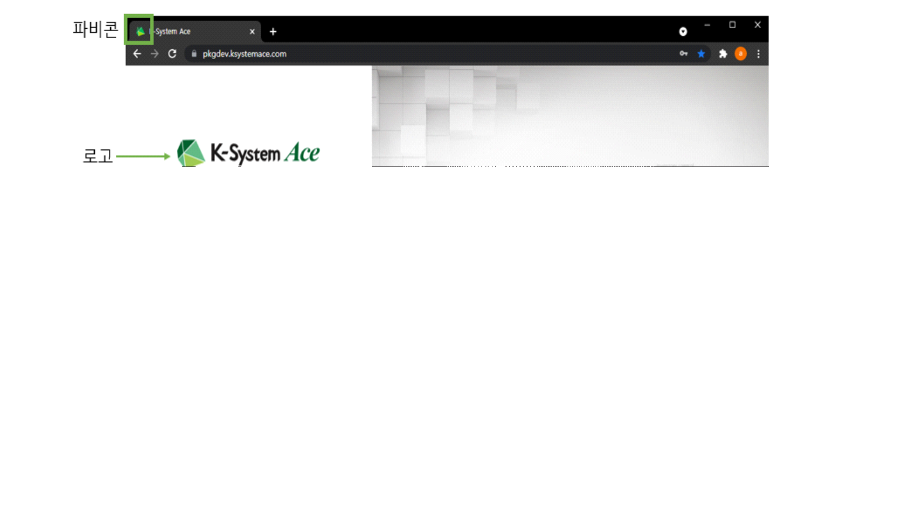
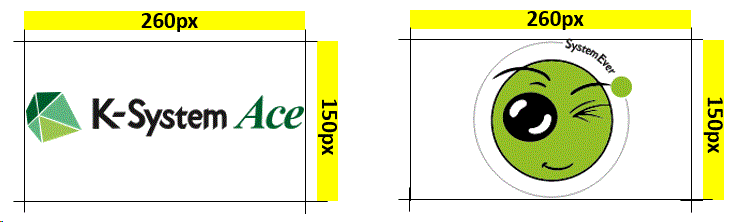
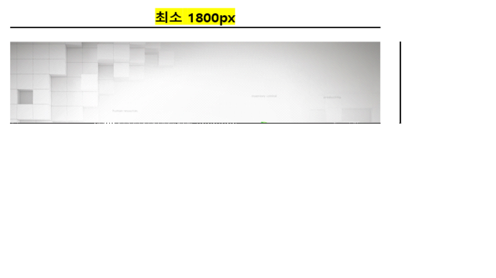
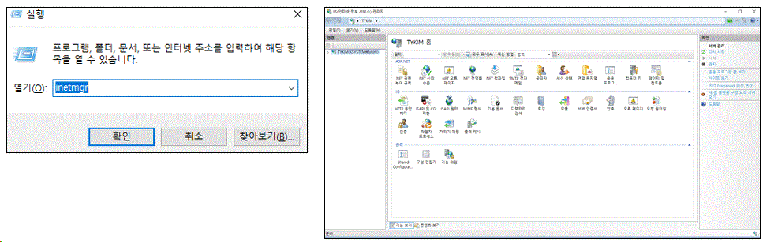
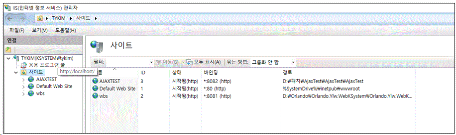
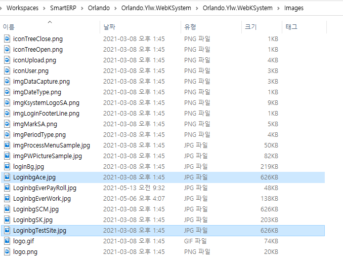
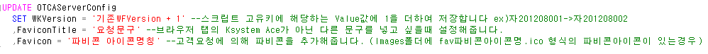
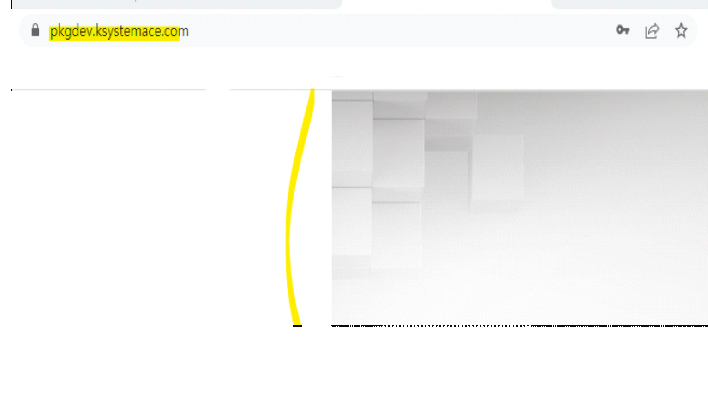
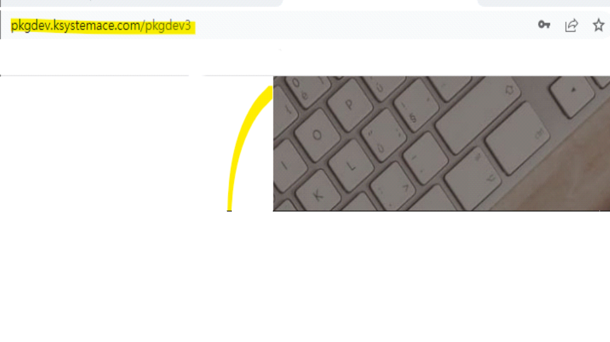
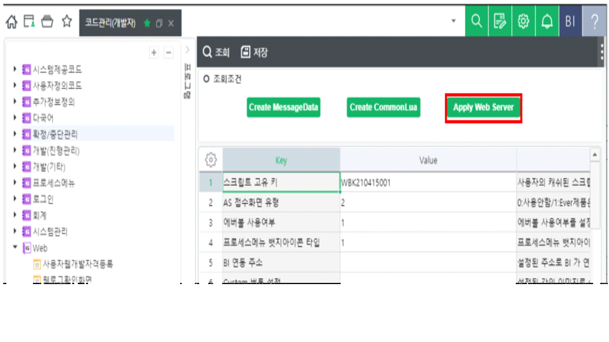

> 로고 및 로그인 배경 변경 가이드
로고 및 로그인 배경 변경 가이드
로고로그인배경
[주의사항]
로고 및 배경이미지 변경 시 이전에 배포된 가이드(PPT)의 경우 OTCAServerConfig의 Thema값을 변경하도록 되어있습니다.
Thema값을 변경하지 않도록 주의 부탁드립니다.(변경 필요 값은 아래 설명 참고)
이미지 가이드

-
로그인페이지의 로고 변경을 원하는 경우, 고객사에서 로고로 사용하고자 하는 이미지를 전달받습니다.
-
로고이미지는 아래 조건을 충족해야 합니다.
◦ 확장자 : 모든 확장자
◦ 권장사이즈 : 가로 260px X 세로 150px 권장 (가로 150px ~ 350px /세로 50px~ 150px 가능)
◦ 배경색 : 투명 또는 RGB(242,245,246) / #F2F5F6 에 해당하는 색
◦ 파일명 : logo+고객사사이트명(siteinit).확장자
ex) logoYLW.png

-
로그인페이지의 로그인 배경 변경을 원하는 경우, 고객사에서 배경이미지로 사용하고자 하는 이미지를 전달받습니다.
-
로그인 배경이미지는 아래 조건을 충족해야합니다.
◦ 확장자 : 모든 확장자
◦ 권장사이즈 : 최소 가로 1800px X 세로 1200px 이상 권장 (기본값: 1874px * 1200px)
◦ 파일명 : Loginbg+고객사사이트명(siteinit).확장자
ex) LoginbgAce.jpg

로고 및 로그인배경 이미지 변경 방법
1) 이미지를 넣기 위해 WEBERP가 설치된 터미널로 접속합니다.(고객연결정보 참고)
2) 실행창에서 Inetmgr을 검색하면 IIS(인터넷정보서비스) 관리자가 실행됩니다.

3) 좌측의 트리에서 사이트를 클릭하면 우측에 해당 서버의 사이트를 확인 가능합니다.
4) WEBERP 주소의 포트와 동일한 포트를 가진 사이트의 경로를 확인하여 해당 경로로 이동합니다.
Ex) WEBERP주소가 ylw.com:8081인 경우 아래 그림에서는 3번째 사이트의 경로가 WEBERP설치 경로입니다.

5) WEBERP 설치 경로에서 Images폴더 내로 이동합니다.
6) Images 폴더 내에 이미지명을 변경하여 붙여넣습니다.
6-1) 로고 변경
-
기본 이미지명 : logoAce.gif
-
다른 이미지로 변경 시
Ex) logoTestSite.png (logo+고객사사이트명(siteinit).확장자) 로 변경하고자 할 때
다음 SQL문을 적용 시켜줍니다.
SQL복사
UPDATE OTCAServerConfig\ SET WKVersion = '기존WFVersion + 1'\ ,LogoAlias = 'TestSite' --고객사사이트명(siteinit)\ ,LogoImageFormat = 'png' --로고 이미지 확장자
[참고] 확장자 변경을 하지 않는 경우 LogoImageFormat = null 으로 세팅합니다.
6-2) 로그인 배경이미지 변경
-
기본 이미지명 : LoginbgAce.jpg
-
앞서 로고 변경 시에 OTCAServerConfig 테이블의 LogoAlias를 변경 한 경우
기존 이미지 LoginbgAce.jpg 파일을 하나 더 복사하여 이미지명을 LoginbgTestSite.jpg 으로 변경해 줍니다.
Ex) LoginbgTestSite.jpg (Loginbg+고객사사이트명(siteinit).확장자)

7) Favicon이나 Favicon Title을 변경하고 싶은 경우
7-1) Favicon의 경우
- Images폴더 내에 전달받은 Favicon 아이콘을 [fav+DB에 저장된 파비콘의 아이콘명.ico]로 지정하여 붙여넣습니다.
Ex) fav파비콘명.ico

SQL복사
UPDATE OTCAServerConfig\ SET WKVersion = '기존WFVersion + 1'\ ,FaviconTitle = '요청문구'\ ,Favicon = '파비콘 아이콘명칭'
7-2) Favicon Title을 변경하고 싶은 경우
- 요청문구를 하기 8번 Update문 내 FaviconTitle 컬럼에 작성하여 운영 DB에 적용 후, 서버에서 재생합니다.
8) 로그인, SIGNIN 버튼 색을 변경하고 싶은 경우 (6.1.7.1004 버전 이후부터 가능합니다.)
SQL복사
UPDATE OTCAServerConfig\ SET LoginBgColor = '로그인버튼 색' --css background color를 기준으로 작성해주시면 됩니다. (ex1. red, ex2. #000)
9) 좌측하단 로고를 숨김처리하고 싶은 경우 (6.1.7.1004 버전 이후부터 가능합니다.)
[참고] 좌측하단 로고는 라이선스 표기를 위함이므로 다른 이미지로 변경은 미지원합니다.
SQL복사
UPDATE OTCAServerConfig\ SET FwOption = '0000000001' --FwOption 컬럼의 10번째 값을 1로 변경해주시면 숨김처리 됩니다. (*10번째 값만 추가/수정해주시면 됩니다)
법인별로 로고 및 로그인배경 이미지를 설정하고싶은 경우
1) 운영DB - OTCACompanyConfig 값 변경
sql복사
--변경 원하는 법인의 CompanySeq를 조건으로 법인별 이미지를 사용할지 여부 설정(0: 사용x, 1: 사용o)\ UPDATE OTCACompanyConfig SET UseLoginImage = 1, UseLogoImage = 1\ WHERE CompanySeq = @CompanySeq\ --변경 원하는 법인의 CompanySeq를 조건으로 배경화면이미지와 로고이미지의 확장자 입력\ --지원 확장자 : 모든 확장자\ UPDATE OTCACompanyConfig SET LoginImgFormat = 'png', LogoImageFormat = 'gif'\ WHERE CompanySeq = @CompanySeq
2) IIS 접속 후 Images/LoginImg 폴더에 이미지 복사
- 이때 이미지의 파일명은
◦ 로고의 경우 [Logo + 사이트이니셜] ex) Logopkgdev3.png
◦ 배경화면의 경우 [Loginbg + 사이트이니셜] ex) Loginbgpkgdev3.png
ex) 법인 별 배경화면 설정


주의사항
위 변경사항을 적용하기 위해서는 서버를 재생해주셔야합니다.
[서버 재생 방법]
- Ace: 코드관리(개발자) -> Web -> 웹서버설정화면 -> Apply Web Server 버튼 클릭

-
Ever: 98번 화면에서 재생
-
화면이 없는 경우 ERP가 설치된 App 서버 접속 후 풀 재생을 해주셔야합니다.
웹 로그 화면을 사용할 수 없는 웹수발주의 경우 IIS 풀 재생을 해야됩니다.
풀 재생 방법
실행창(windows+R)에서 Inetmgr 입력 후 IIS(인터넷정보서비스) 관리자 실행 > 아래 캡쳐사진에서 pkgdev_wk 대신 고객사 운영서버인경우 사이트이니셜_wk 클릭 > 오른쪽 작업 창에 재생 클릭(한번)
10) 재로그인 시 로고가 변경됩니다.